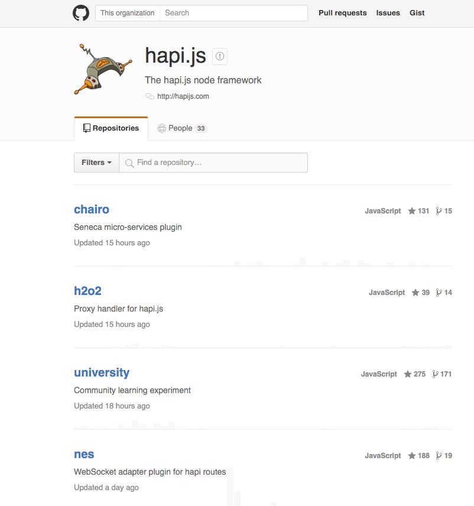
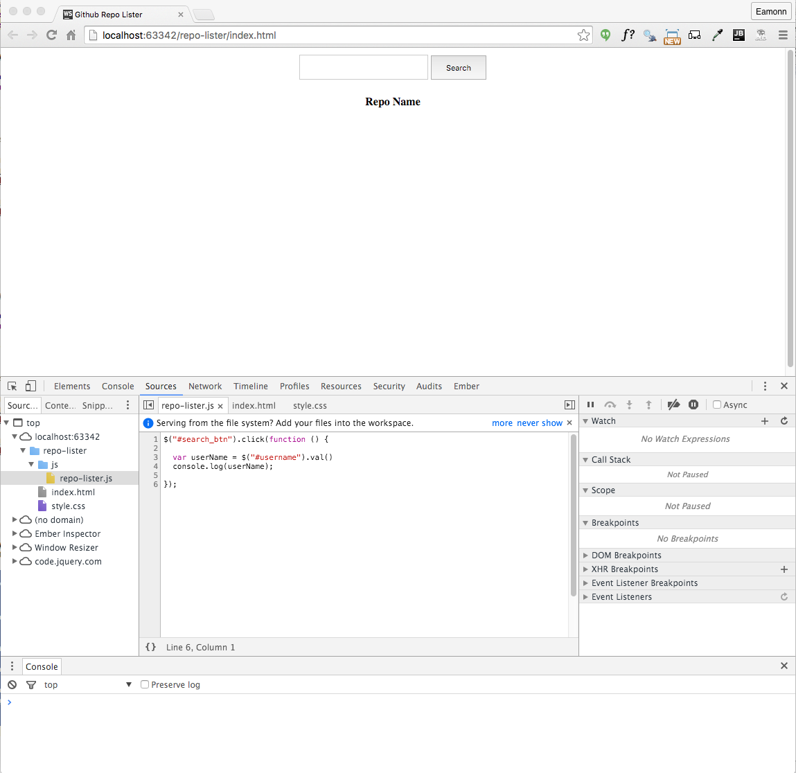
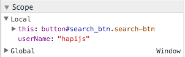

Objectives
Explore the github API
Web Interface
Visit the following page on github:
You will see something like this:

Now try this url here instead:
You might see something like this:

See if you can correlate the information on the two different views above - i.e. locate what subset is presented on the page.
Json
Look at this rendering of the same view here:

This is generated by using this Chrome Plugin:
To install it, open the above page in chrome and click in the JSONView for Chrome link:
Once installed in chrome, visit the api link again:
And you should see it rendered as above.
Note that is is a 'folding' view - so you can collapse down the various sections of the document:

As well as follow any of the highlighted links.
Project Setup
Create a new Empty Project in Webstorm called js-ajax-1 and create the following structure - with empty files as shown:

These are starter version of the three files:
style.css
html {
height: 100%;
}
body {
height: 100%;
margin: 0;
padding: 0;
}
.search {
margin-top: 10px;
text-align: center;
}
.search-input {
width: 180px;
height: 30px;
}
.search-btn {
width: 80px;
height: 35px
}
.result {
width: 80px;
height: 35px;
}
.repo_table {
margin-top: 20px;
margin-left: auto;
margin-right: auto;
}index.html
<!doctype html>
<html>
<head>
<title>Github Repo Lister</title>
<link href="style.css" type="text/css" rel="stylesheet"/>
<script src="https://code.jquery.com/jquery-2.2.3.min.js"></script>
</head>
<body>
<div class="search">
<input type="text" name="username" id="username" class="search-input">
<button id="search_btn" class="search-btn">Search</button>
<span id="result-msg" class="result"> </span>
</div>
<table class="repo_table" id="repo_table">
<thead>
<tr>
<th>Repo Name</th>
</tr>
</thead>
<tbody>
</tbody>
</table>
<script src="js/repo-lister.js" type="text/javascript"></script>
</body>
</html>repo-lister.js
$('#search_btn').click(function () {
var userName = $('#username').val();
console.log(userName);
});Browse to index.html now, enter a value and press search. You can do this from within WebStorm - as the chrome icon will appear if you leave the mouse rest on the source for a second or two.

Bring in the .jscsrc file from th previous labs, and make sure the inspections are enabled.
Chrome Debugging
in Chrome, select `Customise->More Tools->Developer Tools'

Try to arrange chrome to look like this:

Now enter the string hapijs into the text box and press search. You should see the string echoed in the console:

In the 'report-lister.js' window - double click on line 3:

This drops a breakpoint on this line of code. Press Search again - this time the program will stop on this line:
This toolbar can now control the program execution:

Experiment with the various buttons - however over them will give you an idea as to what they do. The first three in particular are important:
- "Resume script execution"
- "Step over next function call"
- "Step into next function call"
Use the second button (step over) to advance the programe line by line. Keep a close eye in the Scope view on the right:

Notice how we can see the current value in the userName variable.
If we want to watch the variable (always having it in view), we can add it using the Watch window:
Press the + button and enter userName to watch that particular variable.
If you loose track of the execution, or if you edit the source to make a change, then you must press the browser reload button in order to restart the program execution:
Retrieve Repo List
Replace the current javascript event handler with the following:
$('#search_btn').click(function () {
var userName = $('#username').val();
console.log(userName);
$.ajax({
dataType: 'json',
url: 'https://api.github.com/users/' + userName + '/repos',
success: function (data) {
console.log('success');
},
error: function (err) {
console.log('fail');
console.log(err.statusText);
},
});
});Using the breakpoint feature of chrome, experiment with various username - both valid and invalid - and explore how the debugger responds.

In particular, for a successful request, locate and expand the data value:

We can extend the success function to list the repo names to the console:
success: function (data) {
console.log('success');
for (let i = 0; i < data.length; i++) {
console.log(data[i].name);
}
},Running this should print the following to the console:

Populating a Table
We can extend the success function to populate the html table we already have laid out:
$('#repo_table').append('<tr><td>' + data[i].name + '</td></tr>');Try this now - and you should see the list of repo names:

we can also display appropriate error message is no user is found.
Here is a revised version - which can replace the current version. The log statements have been removed to keep it simple - and also a result string is displayed with:
- number of repos if successful
- an error message is failed.
$('#search_btn').click(function () {
var userName = $('#username').val();
console.log(userName);
$.ajax({
dataType: 'json',
url: 'https://api.github.com/users/' + userName + '/repos',
success: function (data) {
console.log('success');
},
error: function (err) {
console.log('fail');
console.log(err.statusText);
},
success: function (data) {
$('#result-msg').text('');
$('#result-msg').text(data.length + ' repos');
for (let i = 0; i < data.length; i++) {
$('#repo_table tbody').append('<tr><td>' + data[i].name + '</td></tr>');
}
},
});
});Refactor Javascript
We introduce two new functions to update the user interface:
function updateResult(result) {
$('#result-msg').text('');
$('#result-msg').text(result);
}
function populateTable(repoList) {
for (var i = 0; i < repoList.length; i++) {
$('#repo_table tbody').append('<tr><td>' + repoList[i].name + '</td></tr>');
}
}We can rework the main search event handler to use these functions:
$('#search_btn').click(function () {
var userName = $('#username').val();
console.log(userName);
$.ajax({
dataType: 'json',
url: 'https://api.github.com/users/' + userName + '/repos',
error: function (err) {
updateResult(userName + ' ' + err.statusText);
},
success: function (data) {
updateResult(data.length + ' repos');
populateTable(data);
},
});
});These functions are more concise and readable - with less repetition.
Exercises
Project repository so far:
Exercise 1:
If you load the repos for hapjs say, and then query for another user (your own github account say) - what happens? It looks like it still returns the hapijs repos. In fact, it is appended the second query on to the first. Change this so that we reset the table (emptying its contents) on every request,
Exercise 2:
Extend the table to display additional information about each repo.
To discover what fields are available, examine the data array in the debugger:

Or - go back to chrome view of the url:
Or - consult the github documentation directly:
In particular - the repo Endpoint is documented here:
Exercise 3:
The url can take parameters - including the sort order. Try to have the repository sorted by 'updates' or 'created' by providing the appropriate parameter
Exercise 4:
If you get 2 working, include a drop down next to the search button, which will allow the user to select on of the order parameters to control the sequence in which the table is populated.